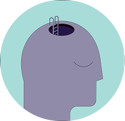

Dai un nome a quello che provi. Il primo passo è capirlo, al resto pensiamo noi.
Se sì, potresti star vivendo una forma di ansia da prestazione.
Non sei solə, e non è un segnale di debolezza: è una risposta comune a contesti dove senti di essere valutato o messo alla prova.
La Dott.ssa Alessandra Cattaneo, psicologa clinica e psicoterapeuta a Lecco, specializzata in approccio cognitivo-comportamentale e EMDR, sottolinea come lo stress scolastico e accademico possa impattare sia a livello mentale che fisico:
“Lo stress scolastico si manifesta spesso con segnali come palpitazioni, tensioni muscolari, tremori, insonnia o nausea. È importante non ridurre il valore dello studente al solo rendimento accademico.”
Fonte: psicologalecco.it – “Stress scolastico e universitario”